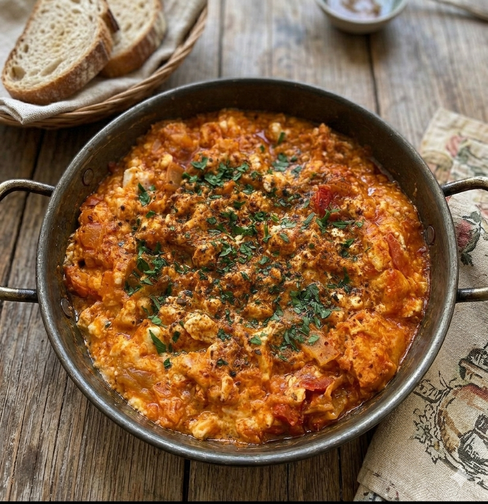

alle rezepte entdecken
Was kochst du heute früh?
5 Frühstück-Rezepte

🍳🌶
★★★★ 7/10
Türkisch · Herzhaft
Menemen
türkische eierspeise · suçuk · spitzpaprika
Die türkische Pfanneneierspeise mit Spitzpaprika und reifen Tomaten — erinnert mich jedes Mal an frischen Sommer in der Türkei.
Zeit
20
Minuten
Schwierigkeit
3/10
Leicht
Portionen
1-2
Personen
Rezept öffnen →

🥚🫙
★★★★ 7/10
Veggie · Besonders
Çilbir
pochierte eier · joghurt · paprikabutter
Pochierte Eier auf würzigem Knoblauch-Joghurt, übergossen mit heißer Paprikabutter — einfach, aber ein ganz besonderes Frühstücksgericht.
Zeit
15
Minuten
Schwierigkeit
4/10
fast Einfach
Portionen
1
Person
Rezept öffnen →

🥞💪
★★★★ 8/10
High-Protein · Fluffy
High-Protein Pancakes
skyr · eier · gedünstet · soufflé-style
Nur 3 Zutaten — Skyr, Mehl und Eier — gedünstet mit Wasserdampf für eine unglaublich fluffige, soufflé-artige Konsistenz. Der Fitness-Pancake.
Zeit
15
Minuten
Schwierigkeit
2/10
Sehr leicht
Portionen
1
Person
Rezept öffnen →

🍳🥑
★★★★★ 10/10
Gourmet · Creamy
Perfektes Cremiges Rührei
eier · sahne · butter · avocado toast
Langsam und sanft gestockt — schieben und falten, nicht rühren. Mit Schnittlauch und optional auf Avocado-Toast. Einfach, aber extrem gut.
Zeit
10
Minuten
Schwierigkeit
1/10
Leicht
Portionen
1
Person
Rezept öffnen →

🇮🇹🍳
★★★★ 8/10
Italiano ·
Italienisches Omelett
prosciutto · mozzarella · basilikum · parmesan
Eier mit Sahne, Prosciutto Cotto, Cherrytomaten, Mozzarella und frischem Basilikum — gedünstet, zusammengeklappt, mit Parmesan gefinisht. Cremig und herzhaft.
Zeit
15
Minuten
Schwierigkeit
3/10
Leicht
Portionen
1
Person
Rezept öffnen →